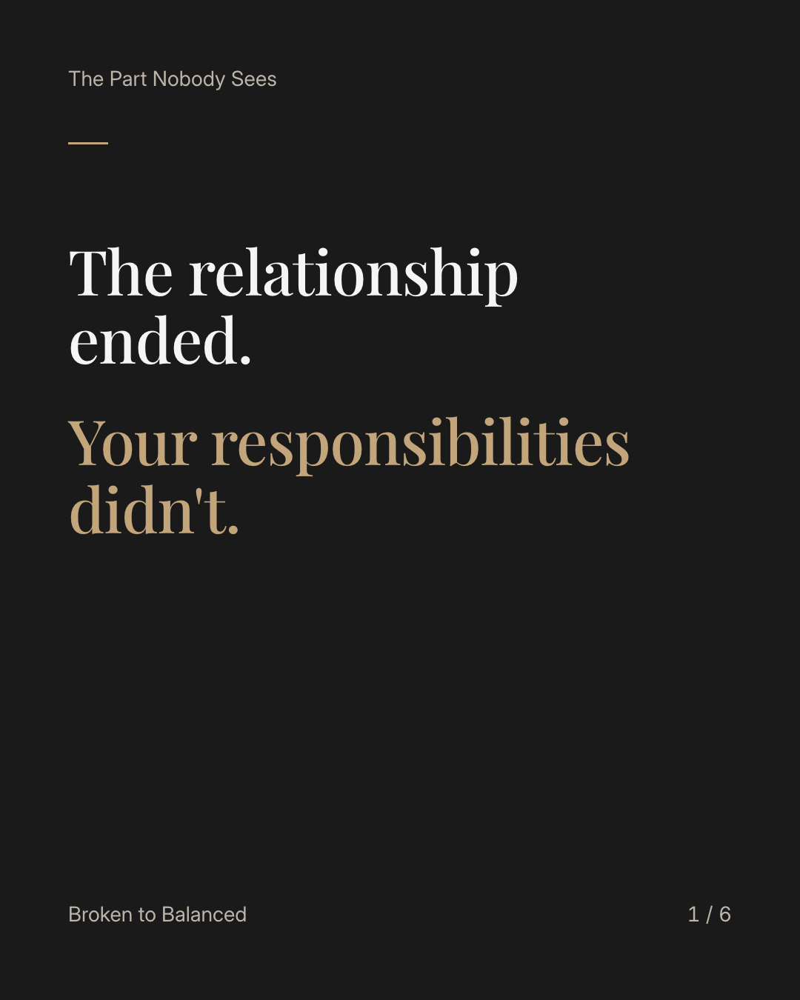
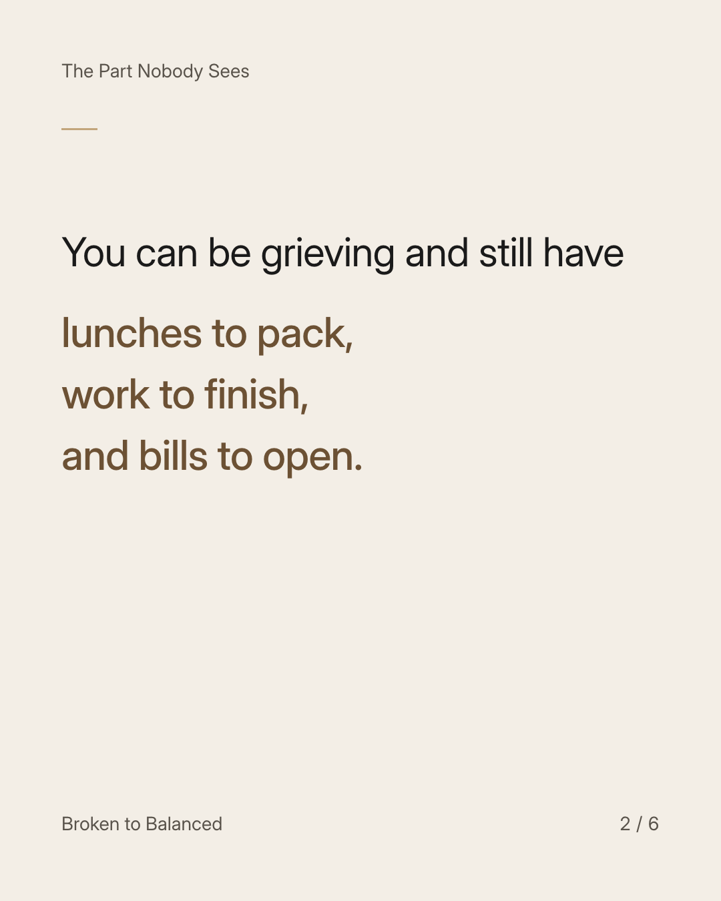
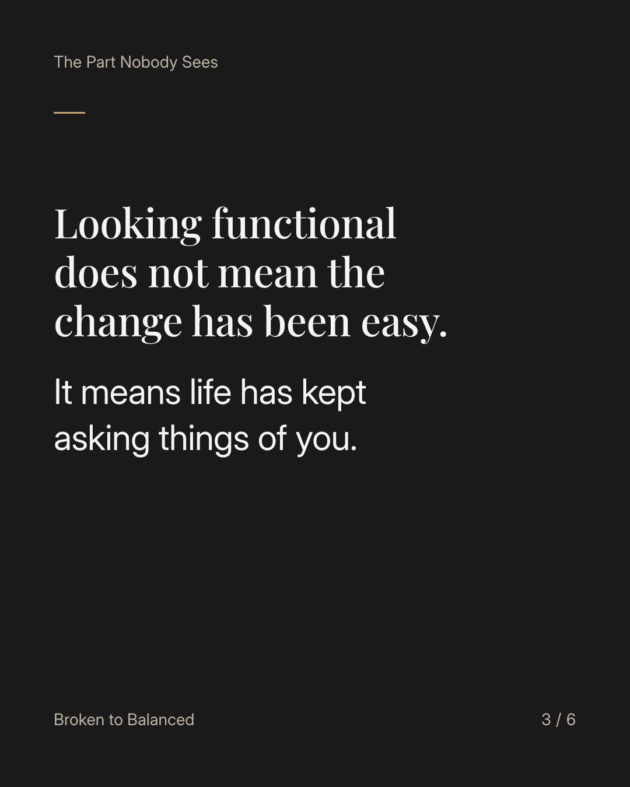
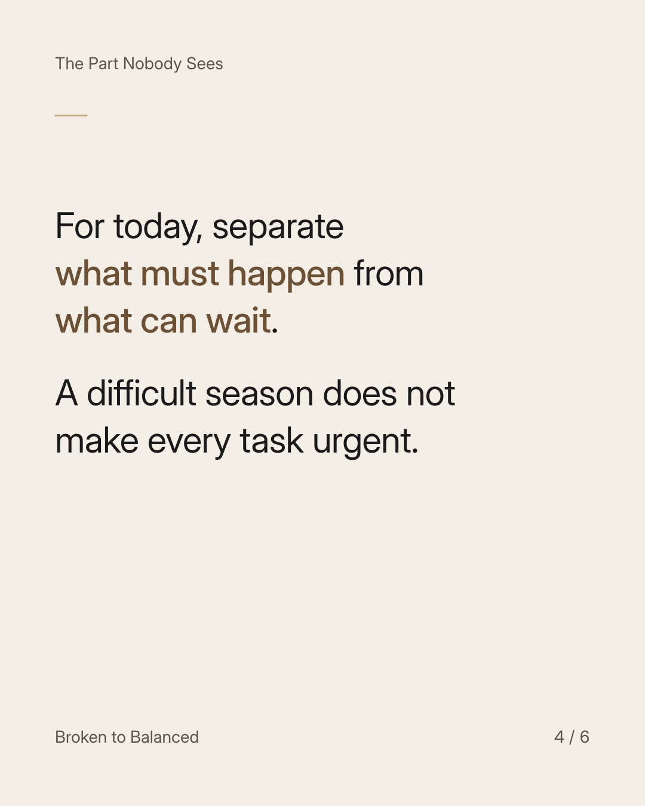
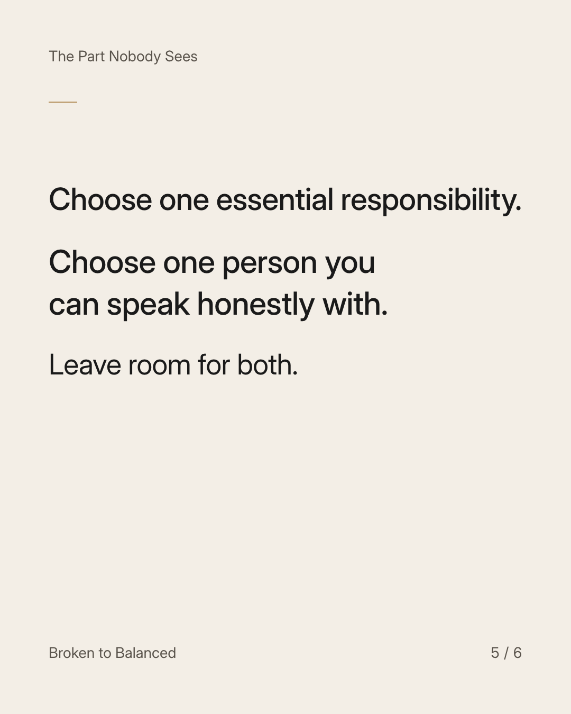

Exact text and accessibility text
The relationship ended. Your responsibilities didn't.
Slide 1 of 6. The relationship ended. Your responsibilities didn't.


Exact text and accessibility text
You can be grieving and still have lunches to pack, work to finish, and bills to open.
Slide 2 of 6. You can be grieving and still have lunches to pack, work to finish, and bills to open.


Exact text and accessibility text
Looking functional does not mean the change has been easy. It means life has kept asking things of you.
Slide 3 of 6. Looking functional does not mean the change has been easy. It means life has kept asking things of you.


Exact text and accessibility text
For today, separate what must happen from what can wait. A difficult season does not make every task urgent.
Slide 4 of 6. For today, separate what must happen from what can wait. A difficult season does not make every task urgent.


Exact text and accessibility text
Choose one essential responsibility. Choose one person you can speak honestly with. Leave room for both.
Slide 5 of 6. Choose one essential responsibility. Choose one person you can speak honestly with. Leave room for both.

Exact text and accessibility text
You do not have to look recovered to deserve support. Send this to someone carrying more than they show.
Slide 6 of 6. You do not have to look recovered to deserve support. Send this to someone carrying more than they show.
Exact caption
Plain-text fallback: select and copy the caption.